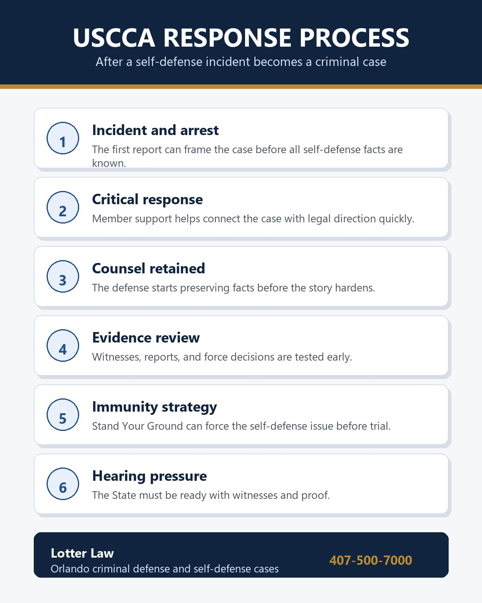
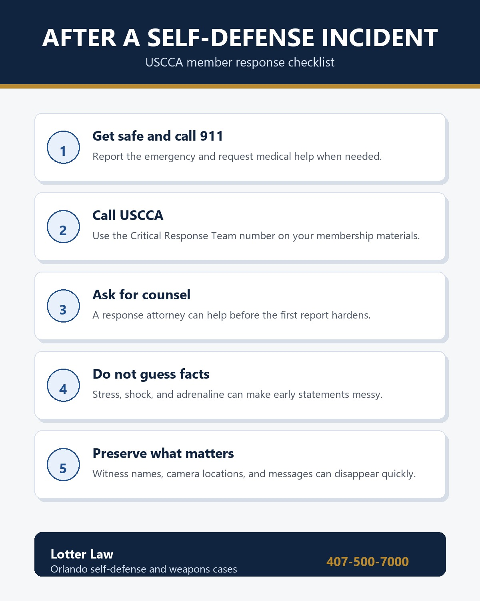

USCCA Critical Response Attorney in Orlando: What That Means After a Self-Defense Incident
I have been vetted by USCCA and listed as one of its Critical Response Attorneys. For a Florida gun owner or USCCA member, that matters most after a self-defense incident has already become stressful, public, and legally dangerous.
This post is not about one particular case result. That deserves its own article. This is the broader point: when someone uses or threatens force in what they believe is self-defense, the first police report can start shaping the case before the defense has had a chance to preserve witnesses, video, context, and the client's legal position.
A USCCA Critical Response Attorney is not just a name on a marketing list. The role is to be available for the kind of criminal-defense work that can follow a self-defense incident: interviews, bond issues, weapons allegations, aggravated assault charges, Stand Your Ground immunity, and the practical decisions that happen before trial.
What the USCCA Critical Response Process Is Supposed to Do
USCCA public materials describe a Critical Response Team available to members around the clock. Those materials also describe the team as a resource that can help connect a member with a self-defense attorney from the USCCA Attorney Network when the aftermath of an incident requires legal help.
In plain English, the process is designed to reduce the delay between the incident and the legal response. That delay matters. A person may be detained, questioned, separated from witnesses, or charged before the full self-defense picture is understood.

Why the Attorney Piece Matters
Self-defense cases are not ordinary paperwork cases. They often involve firearms, knives, physical confrontations, surveillance video, frightened witnesses, inconsistent statements, and police officers trying to make fast decisions with incomplete information.
A criminal-defense attorney in this space has to understand more than the charge label. Aggravated assault under F.S. 784.021 may overlap with a lawful use or threatened use of force under F.S. 776.012. Florida's immunity statute, F.S. 776.032, can also create a pretrial path for raising the self-defense issue before a jury trial.
That is why early legal involvement can change the shape of a case. It can help identify whether the issue is bond, no-contact conditions, firearm return, employment impact, witness preservation, or a Stand Your Ground hearing.
The First Day Can Shape the Whole Case
The first day after a self-defense incident is usually chaotic. The client may be exhausted, frightened, injured, angry, or trying to help officers understand why the other person was the aggressor. That is a human reaction, but it can also create legal risk. A rushed explanation can leave out the most important facts, use the wrong words, or sound inconsistent later when everyone is calmer.
A response attorney's job is not to make facts up or hide evidence. The job is to slow the legal process down enough that the true facts can be preserved and presented in the right forum. Sometimes that means locating witnesses. Sometimes it means identifying security cameras before footage is overwritten. Sometimes it means documenting injuries, threats, prior contact, or the client's lawful reason for being where he was.
The police report is important, but it is not the whole case. It is usually the first official version of the case. If the self-defense facts are missing from that first version, the defense has to work quickly to keep the prosecution from treating an incomplete report as the entire story.
That is also why a member should avoid turning the incident into a running explanation for friends, employers, social media, or anyone else who is not part of the legal response. A defense lawyer can help decide what needs to be said, what should be documented, and what should wait until the evidence is reviewed.
Early Defense Work Often Means
- Identifying witnesses before memories fade or contact information disappears.
- Preserving video, photographs, dispatch records, and body-worn camera context.
- Reviewing bond and release conditions that may affect work, firearms, or family contact.
- Separating the criminal-defense strategy from panic, online discussion, or employer pressure.
- Deciding whether the case should be prepared for a Stand Your Ground immunity hearing.
The Different Job of This Post
The Stand Your Ground articles explain the law. The aggravated assault article explains the charge. The case-result article tells what happened in one anonymized USCCA member case. This article explains the USCCA response-attorney role by itself.
What USCCA Membership Does Not Automatically Do
Membership and attorney access do not make the legal problem disappear. Police can still arrest. Prosecutors can still file charges. Witnesses may still disagree. A Stand Your Ground hearing still has to be prepared. The State may still try to overcome immunity.
USCCA benefits, policy terms, and exclusions can change, and every member should rely on the current membership agreement and insurance policy rather than a blog summary. The practical value from the defense side is not magic. It is speed, coordination, and the ability to start protecting the record before the case hardens.
That distinction is important. A membership benefit can help a person get connected with resources, but the defense still has to be built the old-fashioned way: facts, witnesses, statutes, reports, preparation, and judgment. No organization can promise a criminal result. No attorney should either. The value is having a real defense response when the client most needs one.

Why My Background Fits This Work
Before becoming a criminal-defense attorney, I worked in law enforcement. I understand how officers respond to a weapon call, how reports get written, how probable cause decisions are made, and how quickly a self-defense claim can be flattened into a charge narrative.
I also handle criminal-defense work in Central Florida courts, including weapons, assault, DUI, and other cases where the first version of events is not always the full story. For USCCA members, that combination matters: the defense has to account for force decisions, police procedure, and courtroom strategy at the same time.
The former law-enforcement perspective is useful because many self-defense cases begin with a call type, a complainant's version, and a quick probable-cause decision. The defense has to understand what officers were looking at, what they missed, and what evidence can still be developed after the arrest. That is especially true when the case involves a firearm, a knife, a security role, or a claim that one person threatened force only because another person created the danger first.
How This Fits With the Other Articles
If you want the law, start with the Stand Your Ground explainer. If you want the charge elements, read the aggravated assault article. If you want to see how a USCCA member's case moved through a Stand Your Ground posture and ended with the charge dropped, read the case-result post.
This page sits in the middle of that spread. It explains why having a vetted response attorney matters before the legal theory, the witnesses, and the case result all collide in court.
USCCA Member Facing a Florida Self-Defense Case?
If you are a USCCA member facing an aggravated assault, firearm, or self-defense-related charge in Central Florida, get counsel involved early.
Call (407) 500-7000 for a free consultation.
This article is general information, not legal advice. USCCA benefits and insurance terms should be verified against current membership documents and policy language. Every criminal case depends on its own facts.
References
Related Articles
USCCA Member Aggravated Assault Case Dropped
A separate article about one anonymized USCCA member case involving armed security work, a knife threat, and a Stand Your Ground hearing.
Self-DefenseStand Your Ground vs. C4 Motion to Dismiss
Why a Stand Your Ground immunity hearing is different from an ordinary motion to dismiss.

Jeff Lotter
Criminal Defense Attorney | Former State Trooper | USCCA Critical Response Attorney
Jeff Lotter is an Orlando criminal defense attorney and former Florida Highway Patrol trooper. He defends clients facing DUI, criminal traffic, firearm, assault, and self-defense-related charges throughout Central Florida.